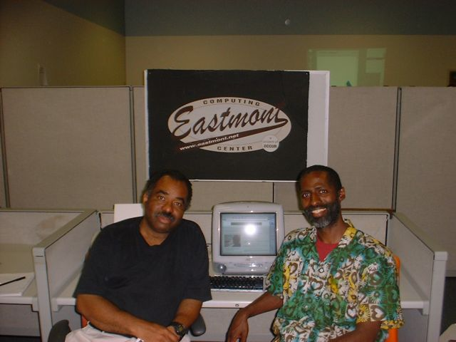
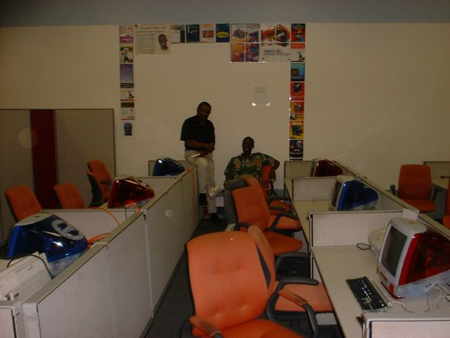
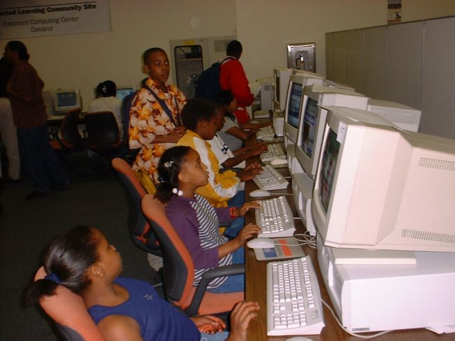

In a computer game there are many levels.
The first levels are easy. Then they get harder.
To beat the game you must keep playing.
Life
is like a game.
Prepare yourself of the next level.

Pictured left: Tony Fleming, Director and Founder of the Eastmont Computing Center, and John (JT) Thompson, Inventor of the Lingo Programming Language and Teacher.
Announcing the Lingo Club at the Eastmont
Computing Center in East Oakland.
John Thompson
has created the Lingo Club, an ongoing class for teen aged youth in Game Design
and Computer Programming. The Lingo Club aims to empower youth by teaching them
how to make their own computer games using the Lingo Programming Language. Lingo
is used in Macromedia Director
software to create games at popular sites like www.shockwave.com.
Classes meet at the Eastmont Computing Center in East Oakland, Monday and Thursday, from 4pm to 6pm, begining September 18. Contact: Tony Fleming Phone: (510) 382-0555, director@eastmont.net, www.eastmont.net, www.lingoclub.com.

The new Macintosh Lab at the Eastmont Computing Center will be the home of the nations first Lingo Club.

The Eastmont Computing Center provides free computer access and classes for all ages. Located in East Oakland the center has been in operation for 3 years.